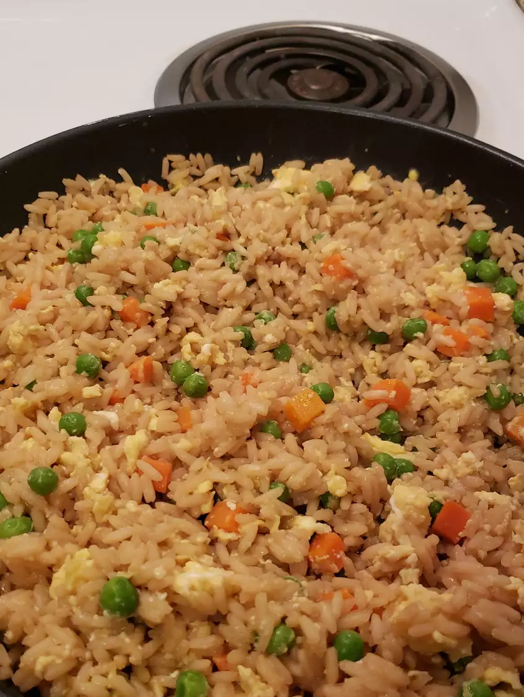

EGG FRIED RICE

DESCRIPTION
"This is by far the very best homemade fried rice I have ever tasted! I omitted the green beans,
substituted green pepper, and added a little pork to make it meaty.
This recipe is extremely versatile - you can add nearly anything you want -
and it still tastes better than any fried rice I've had from takeout. A definite winner!"
INGREDIENTS (4 serv.)
- 1 cup water
- 1/2 teaspoon salt
- 2 tablespoons soy sauce
- 1 cup uncooked instant rice
- 1 teaspoon vegetable oil
- 1/2 onion, finely chopped
- 1 egg, lightly beaten
- 1/4 teaspoon ground black pepper
STEPS
-
In a saucepan bring water, salt and soysauce to a boil.
Add rice and stir.
Remove from heat, cover and let stand 5 minutes.
-
Heat oil in a medium skillet or wok over medium hear.
Saute onions and green beans for 2 to 3 minutes.
Pour in egg and fry for 2 minutes, scrambling egg while it cooks.
-
Stir in the cooked rice, mix well and sprinkle with pepper.
RETURN TO HOMEPAGE